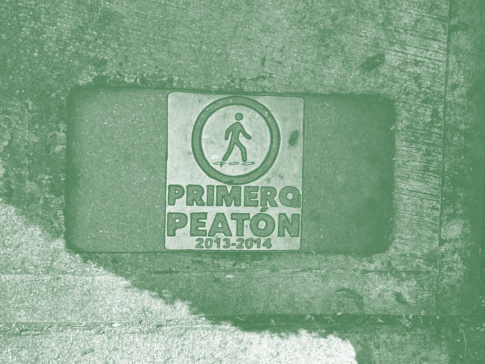

5 km/h
La ciudad a velocidad humana

Observar, registrar y traducir la experiencia de caminar por la ciudad para visibilizar la posición marginal de la movilidad peatonal.
Proyecto
(Aquí va tu contenido. Manténlo corto: 2–4 párrafos máximo.)